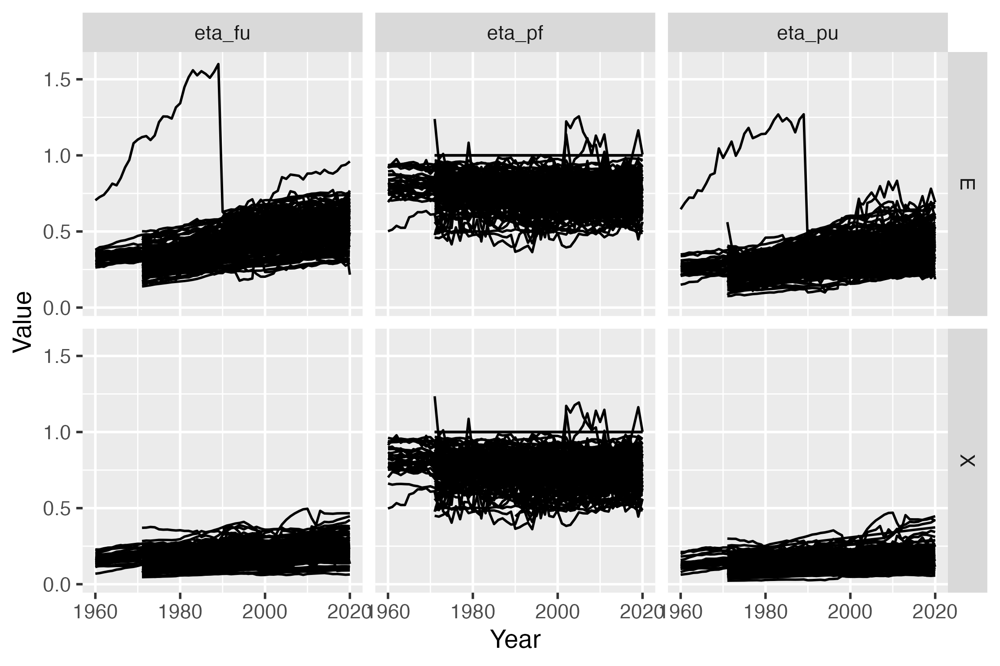
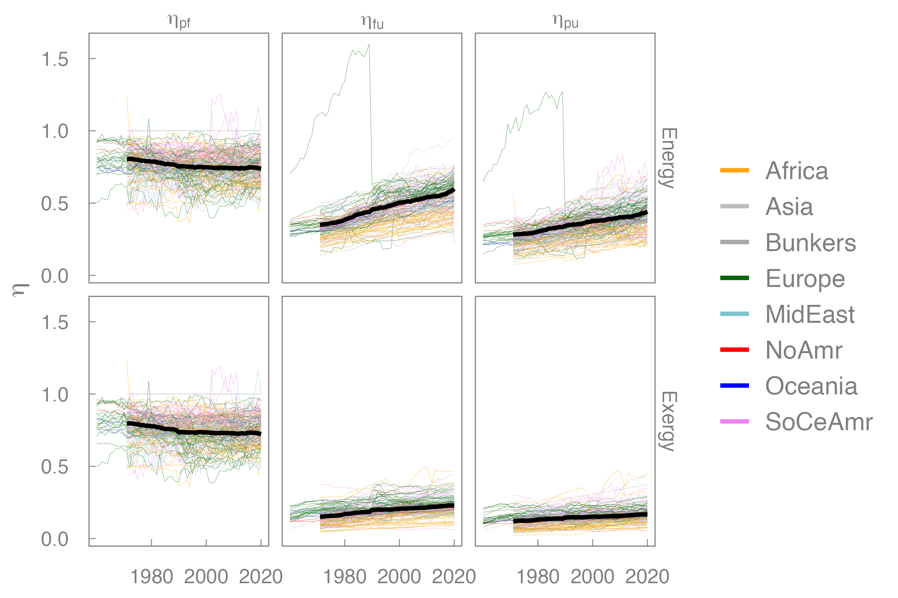

Efficiency graph example
Matthew Kuperus Heun
2023-12-19
efficiency_graph_example.RmdIntroduction
The MR-PFU Database contains primary, final, and useful energy and exergy data for all countries covered by the International Energy Agency (IEA). Aggregations are also available.
But it can be a challenge to get started with the MR-PFU Database if
you are unfamiliar with some types of R programming. This
vignette provides a detailed example of working with MR-PFU Database
information to help users get over that hurdle.
In particular, this vignette shows how to create a graph of country-level energy and exergy efficiencies first presented at the International Exergy Economics Workshop in July 2023 (IEEW2023) by Matthew Kuperus Heun (Calvin University). In the process, important concepts for accessing and working with the data are demonstrated, including
- creating a pinboard,
- reading efficiency data,
- preparing the data, including filtering,
- creating an initial version of graph, and
- refining the graph for presentation.
Most R programs use packages that are loaded at the
beginning of a session. The following packages are used in this
vignette.
library(devtools)
library(dplyr)
library(ggplot2)
library(MKHthemes)
library(PFUSetup)
library(pins)
library(readxl)
library(tidyr)All packages are available on the Comprehensive R Archive Network (CRAN), except MKHthemes and PFUSetup. Instructions for loading MKHthemes and PFUSetup are given below.
Create the pinboard
The first step is to establish a “pinboard” for the pins package. Someone from the
MR-PFU Database team will have shared the “PipelineReleases” folder if
you have access to IEA data. The PFUSetup package is
helpful to find the correct folder. Install the PFUSetup
package with the following code.
devtools::install_github("EnergyEconomyDecoupling/PFUSetup")Create the pinboard from the correct Dropbox folder. Your
pinboard_folder might be different from this example, due
to a different location on your computer.
pinboard_folder <- PFUSetup::get_abs_paths()[["pipeline_releases_folder"]]
pinboard_folder
#> [1] "/Users/mkh2/Dropbox/Fellowship 1960-2015 PFU database/OutputData/PipelineReleases"
pinboard <- pins::board_folder(pinboard_folder, versioned = TRUE)
pinboard
#> Pin board <pins_board_folder>
#> Path: '/Users/mkh2/Dropbox/Fellowship 1960-2015 PFU
#> database/OutputData/PipelineReleases'
#> Cache size: 0Read efficiency data
Next, users can consult the versions and products.xlsx
file located in the “PipelineReleases” folder. to find the desired
database product. For this example, we want data for pf,
fu, and pu efficiencies, which can be found in
Product E, whose pin is named “agg_eta_pfu”. The “versions and
products.xlsx” file indicates that the pin version of the “agg_eta_pfu”
product for database v1.1 is “20230619T051304Z-f653c”. Putting it all
together, the following code reads the desired version of the desired
data for v1.1 of the PFU database.
agg_eta_pfu_data <- pins::pin_read(board = pinboard,
name = "agg_eta_pfu",
version = "20230619T051304Z-f653c")agg_eta_pfu_data is an R data frame as
shown below:
agg_eta_pfu_data
#> # A tibble: 473,140 × 16
#> Country Method Energy.type Year IEAMW Chopped.mat Chopped.var
#> <chr> <chr> <chr> <dbl> <chr> <chr> <chr>
#> 1 AGO PCM E 1971 IEA None None
#> 2 AGO PCM E 1971 IEA None None
#> 3 AGO PCM X 1971 IEA None None
#> 4 AGO PCM X 1971 IEA None None
#> 5 AGO PCM E 1971 MW None None
#> 6 AGO PCM E 1971 MW None None
#> 7 AGO PCM X 1971 MW None None
#> 8 AGO PCM X 1971 MW None None
#> 9 AGO PCM E 1971 Both None None
#> 10 AGO PCM E 1971 Both None None
#> # ℹ 473,130 more rows
#> # ℹ 9 more variables: Product.aggregation <chr>, Industry.aggregation <chr>,
#> # GrossNet <chr>, EX.p <dbl>, EX.f <dbl>, EX.u <dbl>, eta_pf <dbl>,
#> # eta_fu <dbl>, eta_pu <dbl>The columns have the following meanings:
- “Country” contains 3-letter country abbreviations.
- “Method” contains only “PCM”, indicating that the “physical content method” is used for all data.
- “Energy.type” contains either “E” (for energy) or “X” (for exergy).
- “Year” is between 1960 and 2020, inclusive.
- “IEAMW” contains one of “IEA” (IEA data),
- “MW” (muscle work), or “Both” (for both IEA and muscle work data).
- “Chopped.mat” and “Chopped.var” are reserved for future use in the database. In this object, both are always “None.”
- “Product.aggregation” and “Industry.aggregation” tell how energy carriers and industries are aggregated were aggregated prior to summing to primary, final, and useful energy stages. For this example, primary, final, and useful aggregations should be the same, regardless of the value of
- “Product.aggregation” or “Industry.aggregation.”
- “GrossNet” contains either “Gross” or “Net” telling whether energy industry own use is included in final and useful aggregations.
- “EX.p”, “EX.f”, and “EX.u” contain primary, final, and useful stage energy and exergy aggregations.
- Finally, we come to the columns of interest for this graph. The columns names “eta_pf”, “eta_fu”, and “eta_pu” contain primary-to-final, final-to-useful, and primary-to-useful efficiencies.
Prepare the data, including filtering
In the code below, we prepare the data by filtering rows and
selecting columns of the agg_eta_pfu_data data frame to
focus on the data of interest for this graph. Comments in the code
narrate the process.
agg_eta_pfu_prepared <- agg_eta_pfu_data |>
# Select only those rows where we have both IEA and MW data,
# where gross energy production is provided, and
# where aggregations were calculated from fully specified data.
dplyr::filter(IEAMW == "Both",
GrossNet == "Gross",
Product.aggregation == "Specified",
Industry.aggregation == "Specified") |>
# Select only the columns of interest to us
dplyr::select(Country, Energy.type, Year, eta_pf, eta_fu, eta_pu) |>
# Pivot the data to create a value column
tidyr::pivot_longer(cols = c(eta_pf, eta_fu, eta_pu),
names_to = "Var.name",
values_to = "Value")
# Here is the prepared data
agg_eta_pfu_prepared
#> # A tibble: 48,018 × 5
#> Country Energy.type Year Var.name Value
#> <chr> <chr> <dbl> <chr> <dbl>
#> 1 AGO E 1971 eta_pf 0.713
#> 2 AGO E 1971 eta_fu 0.238
#> 3 AGO E 1971 eta_pu 0.170
#> 4 AGO X 1971 eta_pf 0.715
#> 5 AGO X 1971 eta_fu 0.0756
#> 6 AGO X 1971 eta_pu 0.0541
#> 7 AGO E 1972 eta_pf 0.729
#> 8 AGO E 1972 eta_fu 0.240
#> 9 AGO E 1972 eta_pu 0.175
#> 10 AGO X 1972 eta_pf 0.731
#> # ℹ 48,008 more rowsCreate an initial version of graph
agg_eta_pfu_prepared is a data frame that contains
everything we need to make the graph. We use the ggplot2 package to make the
graph.
agg_eta_pfu_prepared |>
# Set the x and y axes
ggplot2::ggplot(mapping = ggplot2::aes(x = Year,
y = Value,
# Group by Country
# to make individual lines
# for each country
group = Country)) +
# Create a line graph
ggplot2::geom_line() +
# Put mini-graphs for energy type in rows and efficiency type in columns
ggplot2::facet_grid(rows = ggplot2::vars(Energy.type),
cols = ggplot2::vars(Var.name))
Refine the graph with colors and other details
The initial version of the graph provides confidence that we can use the data, but it is not attractive.
- Line widths should be reduced so we can see individual countries instead of an undifferentiated mass of lines for all countries.
- Lines could be coloured by continent.
- A world average line should be added and distinguished from other lines.
- The column labels (“eta_pf”, “eta_fu”, and “eta_pu”) should be changed to Greek letters with subscripts (\(\eta_{pf}\), \(\eta_{fu}\), and \(\eta_{pu}\)).
- The left-to-right order of efficiencies should be changed to “eta_pf”, “eta_fu”, “eta_pu”.
- “E” and “X” on the rows of the graph should be changed to “Energy” and “Exergy” for clarity.
- Change “Asia_” to “Asia” in the “Country” and “Continent” column (to be added later).
- The word “Value” on the \(y\)-axis should be changed to they symbol for efficiency (\(\eta\)).
- There is no need for the word “Year” on the \(x\)-axis. Everyone knows those are years.
- The year labels run into each other.
- The gray background is ugly.
Many of these changes are made by adjusting the values in the
metadata columns of the agg_eta_pfu_prepared data frame.
The code below shows those adjustments.
agg_eta_pfu_nice <- agg_eta_pfu_prepared |>
dplyr::mutate(
# We use the string "Asia_" to indicate
# our aggregation for Asia.
# Change to "Asia" (without the trailing "_").
Country = dplyr::case_when(
Country == "Asia_" ~ "Asia",
TRUE ~ Country
),
# Change "E" and "X" to "Energy" and "Exergy"
Energy.type = dplyr::case_match(
Energy.type,
"E" ~ "Energy",
"X" ~ "Exergy"
),
Var.name = dplyr::case_match(
Var.name,
# Change names of efficiencies
# for later subscripts of "pf", "fu", and "pu"
"eta_pf" ~ "eta[pf]",
"eta_fu" ~ "eta[fu]",
"eta_pu" ~ "eta[pu]"
),
# Set ordering for efficiency variables
# so they look nice in our graph
Var.name = factor(Var.name, levels = c("eta[pf]", "eta[fu]", "eta[pu]"))
)To further improve appearance, we can colour the individual country lines by continent. And, we can highlight the world as a thick line atop all countries.
The first step is to join continent information to the efficiency data, thereby making continent data available for the graph. We can load a data frame of countries and continents and join it to the efficiency data frame.
# The continents file is an input
# to the calculation pipeline
# that created the database.
# Users can create their own
# continent mapping data frame
# or ask for ours.
continents_file <- PFUSetup::get_abs_paths()[["aggregation_mapping_path"]]
continents_file
#> [1] "/Users/mkh2/Dropbox/Fellowship 1960-2015 PFU database/InputData/v1.2/aggregation_mapping.xlsx"
continents_agg_map <- continents_file |>
# Read the continent_aggregation tab of the Excel file
readxl::read_excel(sheet = "continent_aggregation") |>
# Adjust the column names
dplyr::rename(
Country = Many,
Continent = Few
) |>
dplyr::mutate(
# Fix "Asia_" --> "Asia"
# to match the efficiency data frame.
Continent = dplyr::case_when(
Continent == "Asia_" ~ "Asia",
TRUE ~ Continent
)
)
continents_agg_map
#> # A tibble: 158 × 2
#> Country Continent
#> <chr> <chr>
#> 1 AGO Africa
#> 2 ALB Europe
#> 3 ARE MidEast
#> 4 ARG SoCeAmr
#> 5 ARM Asia
#> 6 AUS Oceania
#> 7 AUT Europe
#> 8 AZE Asia
#> 9 BEL Europe
#> 10 BEN Africa
#> # ℹ 148 more rows
# Join to the efficiency data
agg_eta_pfu_with_continents <- agg_eta_pfu_nice |>
dplyr::left_join(continents_agg_map, by = "Country")
# Notice the Continent column
agg_eta_pfu_with_continents
#> # A tibble: 48,018 × 6
#> Country Energy.type Year Var.name Value Continent
#> <chr> <chr> <dbl> <fct> <dbl> <chr>
#> 1 AGO Energy 1971 eta[pf] 0.713 Africa
#> 2 AGO Energy 1971 eta[fu] 0.238 Africa
#> 3 AGO Energy 1971 eta[pu] 0.170 Africa
#> 4 AGO Exergy 1971 eta[pf] 0.715 Africa
#> 5 AGO Exergy 1971 eta[fu] 0.0756 Africa
#> 6 AGO Exergy 1971 eta[pu] 0.0541 Africa
#> 7 AGO Energy 1972 eta[pf] 0.729 Africa
#> 8 AGO Energy 1972 eta[fu] 0.240 Africa
#> 9 AGO Energy 1972 eta[pu] 0.175 Africa
#> 10 AGO Exergy 1972 eta[pf] 0.731 Africa
#> # ℹ 48,008 more rowsEstablish the continent colors.
continent_colours <- c(Africa = "orange", Asia = "gray",
Bunkers = "darkgray", Europe = "darkgreen",
MidEast = "cadetblue3",
NoAmr = "red",
Oceania = "blue", SoCeAmr = "violet",
World = "black")To create a specific World-average line, we need to separate the World data from all countries. Also, continent averages should be removed from the data frame that contains country lines.
# Create a data frame of only World information
# for years >- 1971
# (the first year when all countries are in IEA data).
# This data frame will be used to create the
# World-average line
agg_eta_pfu_world <- agg_eta_pfu_with_continents |>
dplyr::filter(Country == "World", Year >= 1971)
# Create a data frame of countries only,
# eliminating continent and world averages
agg_eta_pfu_countries <- agg_eta_pfu_with_continents |>
dplyr::filter(!(Country %in% c("Africa", "Asia", "Bunkers", "Europe",
"MidEast", "NoAmr", "Oceania", "SoCeAmr",
"World", "WRLD")))We will use the MKHthemes package to make nice-looking graphs with a white background and tick marks that point inward, not outward. MKHthemes can be loaded with the following code.
devtools::install_github("MatthewHeun/MKHthemes")Now make the graph. Details different from the previous version are identified by comments.
ggplot2::ggplot(mapping = ggplot2::aes(x = Year,
y = Value,
group = Country,
# Set country colours by continent
colour = Continent)) +
# Create two different line layers.
# The first has countries only and a narrow linewidth.
ggplot2::geom_line(data = agg_eta_pfu_countries,
linewidth = 0.05) +
# The second (upper) layer has World only,
# a larger linewidth and black colour.
ggplot2::geom_line(data = agg_eta_pfu_world,
linewidth = 1,
colour = "black") +
# Set only a few years on the x-axis so the labels
# don't collide
ggplot2::scale_x_continuous(breaks = c(1980, 2000, 2020)) +
# Use the continent_colours for the lines
ggplot2::scale_colour_manual(values = continent_colours) +
# Eliminate the x-axis label ("Year");
# everyone knows those are years.
# Eliminate the colour label, "Continent";
# everyone knows these are continent names.
ggplot2::labs(x = NULL,
y = expression(eta),
colour = NULL) +
ggplot2::facet_grid(rows = ggplot2::vars(Energy.type),
cols = ggplot2::vars(Var.name),
labeller = ggplot2::label_parsed) +
# Set pleasant aesthetics such as white background,
# gray border lines, and
# inward-pointing tick marks.
MKHthemes::xy_theme() +
ggplot2::guides(
colour = ggplot2::guide_legend(
# Adjust the size of the line segments in the legend
# independent from linewidths in the graph itself
override.aes = list(linewidth = 1)
)
)
The new version of the graph is aesthetically pleasing and conveys more information than the initial attempt.